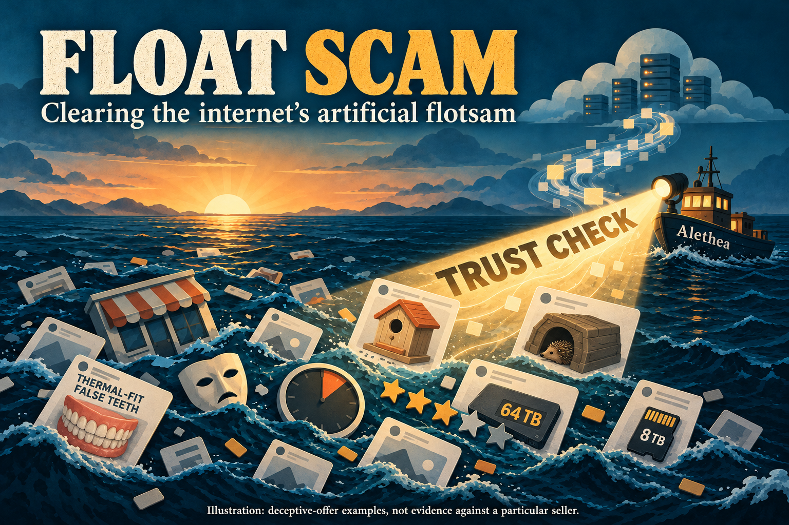
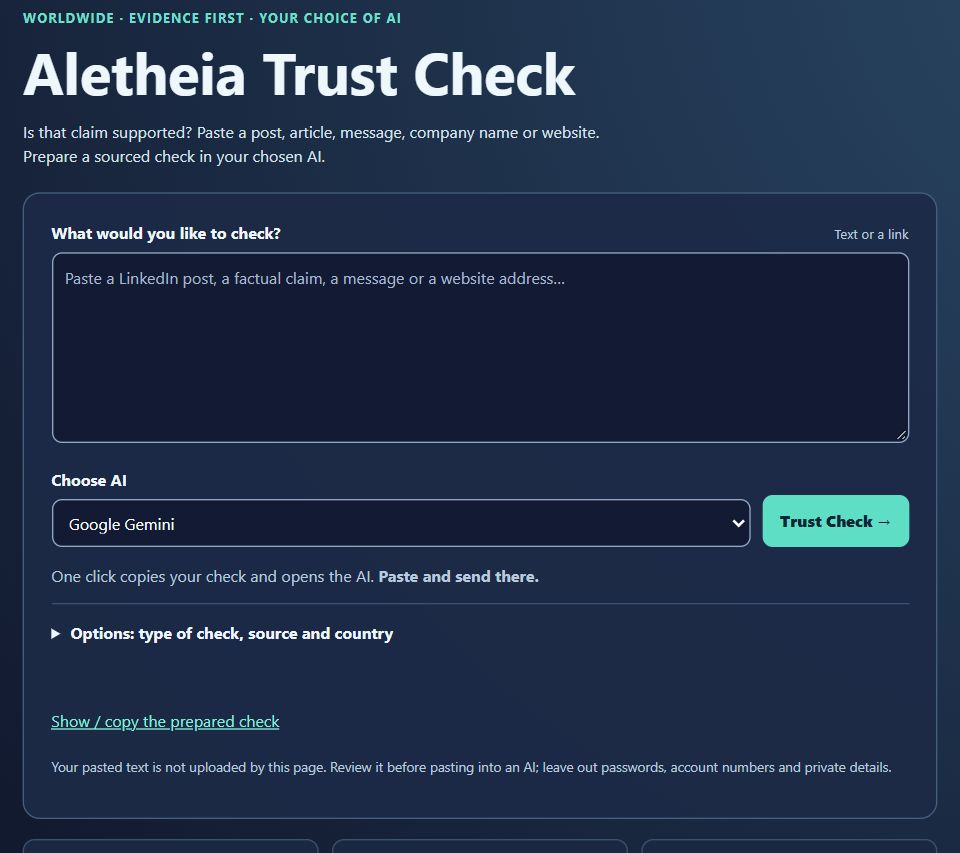

Float Scam
A short UK guide to reporting suspicious adverts and websites.
Where to email
The Internet's FloatScam Gyre
Miracle teeth, fake-capacity drives and offers that are too good to be true. Scam adverts and disposable shopfronts keep circling through our feeds, ready to catch the next person.
If you see litter, pick it up.
If you see scams, report them.
A clear report gives the platform, host or regulator something specific to investigate. Keeping a copy records that you told them.
- Keep the evidence. Save the advert link, destination address, screenshot, date and what looks wrong.
- Tell the right people. Report the advert in the app. Use the relevant email above or the other reporting routes in the PDF.
- Keep the receipt. Save what you sent and any reply or reference number. Follow up if it is still there.

Need help checking it?
Open Aletheia Trust Check. Paste the claim or link into the box, choose your AI and press Trust Check. Paste and send the prepared check in the AI window.

You should get a short finding, evidence links, what remains uncertain and suggested next steps. The AI needs access to the sources; it should say when it cannot check them.
To request reporting emails, add:
Draft an email reporting this concern. List the relevant recipients, with the source for each address. Include a subject, the exact links, dates and supporting evidence. I will check and send it myself.
Addresses found on Reddit or forums can be useful leads. Label them unofficial, keep the source link and check who controls them before sending personal details.
The PDF also has reporting links for suspicious websites, adverts, texts and WhatsApp messages, fraud and consumer help.
Your internet needs you: campaign poster
UK reporting routes checked 30 October 2026. Written and illustrated with AI assistance.